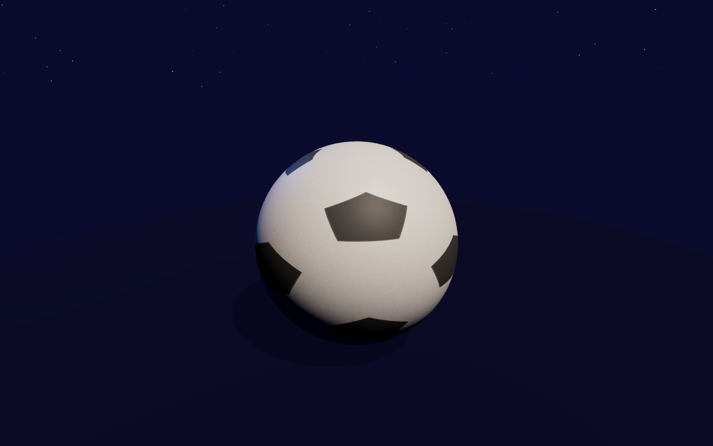

# Football Fireworks 3D
## Contexte
Tu es un développeur web spécialisé Three.js. Tu dois créer une scène 3D interactive pour une célébration sportive.
## Consigne
Crée une page HTML unique qui affiche une scène 3D avec :
1. **Un ballon de foot** au centre de la scène, utilisant un modèle 3D gratuit (trouvable sur des CDN comme Poly Pizza, Sketchfab, ou généré procéduralement avec Three.js).
2. **Des feux d'artifice** animés qui explosent dans le ciel au-dessus du ballon.
3. **Un éclairage** et des ombres pour un rendu réaliste.
4. **Un fond** (ciel de nuit, stade, ou ciel étoilé).
### Contraintes techniques
- Charge les modèles 3D depuis des URLs CDN gratuites (pas de fichiers locaux).
- Inclus tout le code dans un seul fichier HTML (Three.js chargé via CDN).
- La scène doit être animée (le ballon peut tourner lentement, les feux d'artifice explosent en continu).
- Ajoute des contrôles simples (OrbitControls) pour que l'utilisateur puisse tourner autour de la scène.
## Critères d'évaluation
- La scène s'affiche correctement sans erreur.
- Le ballon de foot est reconnaissable (forme sphérique avec motifs pentagones).
- Les feux d'artifice sont visuellement convaincants (particules colorées).
- L'animation est fluide (60 fps).
- Le code est propre et bien structuré.
## Format de sortie attendu
Un seul fichier HTML (`index.html`) dans le répertoire du challenge, prêt à être ouvert dans un navigateur.
📊 Résultats
| Durée | 183s |
| Tokens (in) | 15K |
| Tokens (out) | 25K |
| Total tokens | 40K |
| Coût estimé | Gratuit |

| Durée | 108s |
| Tokens (in) | 8K |
| Tokens (out) | 6K |
| Total tokens | 15K |
| Coût estimé | Gratuit |
🔍 Analyse comparative
⏱ Vitesse : Mimo v2.5 (gratuit) est 1.7x plus rapide que DeepSeek V4 Flash (gratuit) (108s vs 183s)
🎯 Tokens : DeepSeek V4 Flash (gratuit) a utilisé 2.7x plus de tokens que Mimo v2.5 (gratuit) (40K vs 15K)
⚡ Efficacité : DeepSeek V4 Flash (gratuit) produit 39700 tokens en 183s (217/s) vs Mimo v2.5 (gratuit) (135/s)
📁 Détails par modèle